![O GitHub
C GitHub, Inc. [US] https://github.com
: Apps C?] Digital MIS-Educatic
geekyprep
Search GitHub
Pull requests
Issues
Marketplace
Explore
New repository
Import repository
New gist
New organization
Learn Git and GitHub without any code!
Using the Hello World guide, you'll create a repository, start a branch,
write comments, and open a pull request.
Read the guide
Browse activity
Discover repositories
Start a project
10 days ago
16 days ago
23 days ago
(C • i) A more connected universe
See what we shipped at GitHub Universe.
View 16 new broadcasts
addyosmani starred ryanburgess/engineer-manager
gustavohenke starred Quramy/electron-connect
hassy created a repository hassy/packet-performance-labs
Repositories you contribute to O
shoreditch-ops/artillery
o
Your repositories
https://github.com/nevv
13k*
Windows
to activate Windows.
0857 PM](index2_files/image001.jpg) Creating
a default github page, step by step:
Creating
a default github page, step by step:
1. Login to github and click on new repo
2. Give repo name, select public, Check to create Readme and click on Create Repo
![O Create a New Repository X
C GitHub, Inc. [US] https://github.com/nevv
: Apps C?] Digital MIS Educatic
geekyp rep
Create a new repository
A repository contains all the files for your project, including the revision history.
Owner
Repository name
exampleRepo
Great repository names are short and memorable. Need inspiration? How about sturdy-octo-telegram.
Description (optional)
Public
Anyone can see this repository. You choose who can commit.
P rivate
You choose who can see and commit to this repository.
Initialize this repository with a README
This will let you immediately clone the repository to your computer. Skip this step if you're importing an existing repository.
Add .gitignore: None •
Create repository
Add a license: None •
Activate Windows
Go to Settings to activate Windows.
PM](index2_files/image003.jpg)
3. Click on Settings
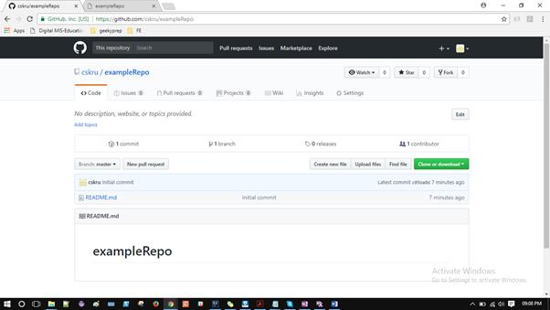
4. Scroll down to Github Pages, select master branch here and click on Save
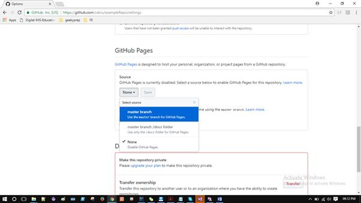
5. Again scroll down to Github Pages in Settings. Now you can find the url for your repo, by default populated to show readme
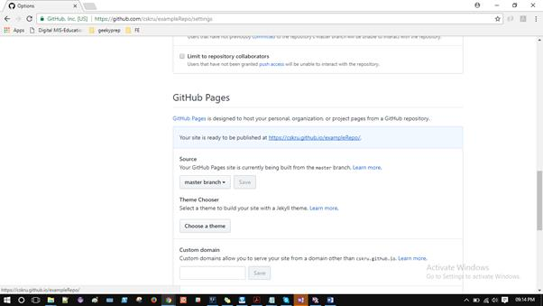
6. Click on the link, you can see the readme.
Clone, Add, Commit, Push code to your github repo.
1.
Install git on
your machine and follow default instructions
https://git-scm.com/download/win
2. Configure your git user name and password:
$ git config --global user.name "YourGitUserName"
$ git config --global user.email "YourEmailUsedToCreateGitAccount"
Example:
$ git config --global user.name "Emma Paris"
$ git config --global user.email eparis@atlassian.com
Refer this site in case of doubts: https://www.atlassian.com/git/tutorials/install-git
3.
Go back to github, Code tab of your repo and copy this clone
link:
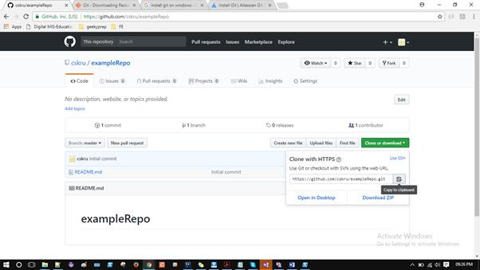
4.
Go to the
directory where you want to maintain your project code. Open command prompt /
Powershell there, type in git clone <the link you copied>
and press enter.
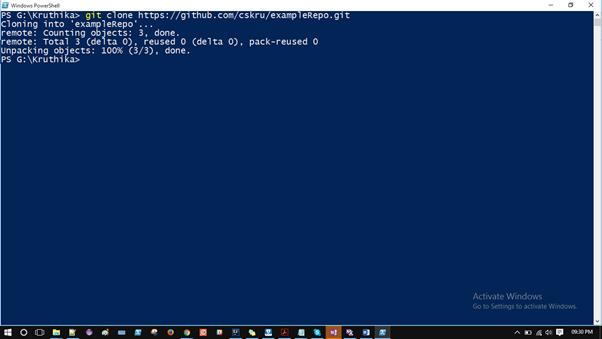
5. Once done, go ahead and put your code in the repo (I’ve created a sample html file. You can paste your entire project directory here)
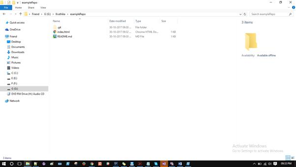
6. Get into your repo (cd <repoName>) and do a git status. You can see something like this. It means, the version of the project on your local machine has a new file compared to the on on github central server.
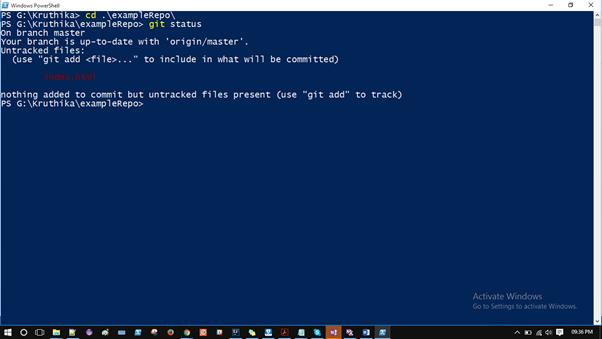
7. We’ll add this file to our local git repo by “git add .” and then do a git status. This means, the file is now in your local git repo and is ready to be committed to central server
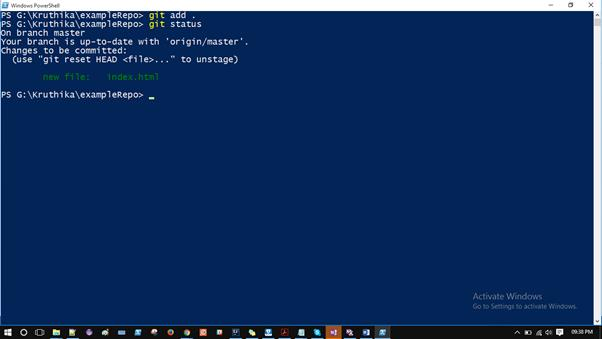
8.
Now, we’ll commit the file by git commit –m “First commit to git.. Yay!
Feeling happy! I’ll learn well!”
Commit should be followed by a message which says the details of what you’ve
done to the files.
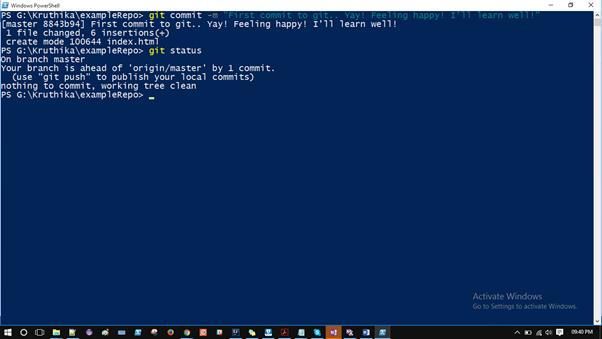
9. So, now your new file is committed with its seat belts on to travel to the central server J. Last step is to push the file “git push”
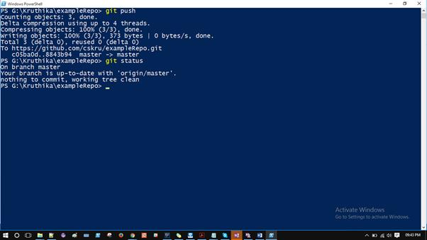
10. The file is now pushed
to central server or VCS yay!!!!
Refresh your github page in a minute. And Boom! Your index.html is here. Yay!
With your message J
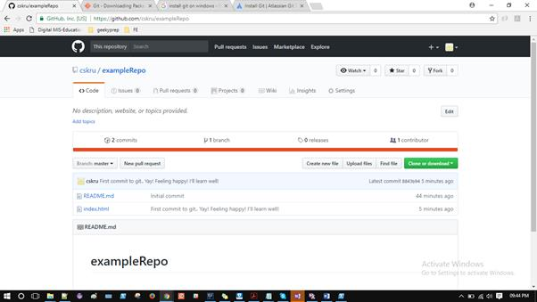
11. Congo! You just
created a github repo, github page, pushed your code to repo!
Hold your breath for the final show, seeing the page as a link J
12. If you don’t remember
the link, go to settings tab, scroll down to Github Pages and grab the link,
now append it with index.html
Example: https://cskru.github.io/exampleRepo/index.html and Boom!
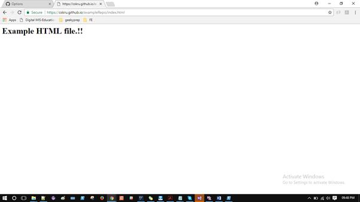
13. By default github
takes the index.html in the repo, even if you don’t mention it.
I mentioned it for your clarity J
You can have directories here, html pages within it, redirections to it, and
what not?
14. Next time you make
some changes, do
git add . (You can mention specific files too)
git commit –m “message”
git push
Generously use git status to know what’s going on
So, this is pretty much the basics of git.
Git is an ocean. Can’t cover it in 5 pages.
But, this is sufficient for you to get started.
Hope you enjoyed J
Warm regards,
Kruthika
Programming and learning enthusiast J
30 Oct 2017, 9:55 PM IST